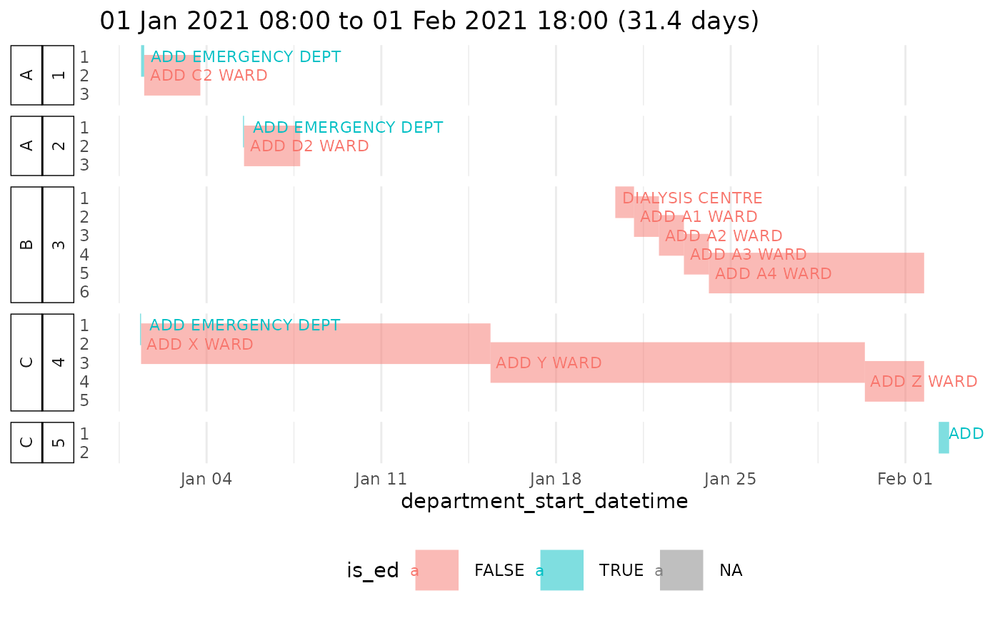

Plot departments (wards) visited by patients
plots_adt.RdSimple plots of showing the history of departments that a patient visits using data from ADT.
Arguments
- x
An ADT data frame that has been joined with annotated ADM data.
- facet
Whether to facet by
person_id_shortor not. Only a sensible plot only one patient's data is in the provided data frame- ...
Passed to
aes(), enabling e.g. colouring according to a user-specified colour ofx
Examples
adm_annotated <- adm_annotate(adm_data_example)
adt_adm_joined <- adt_data_example %>%
dplyr::left_join(adm_annotated)
#> Joining with `by = join_by(person_id, visit_id)`
if (require("ggplot2")){
plot_adt_department_col(adt_adm_joined,
colour = is_ed)
}
#> Loading required package: ggplot2
#> Error in geom_segment(alpha = 0.5, size = 10): Problem while computing aesthetics.
#> ℹ Error occurred in the 1st layer.
#> Caused by error in `loadNamespace()`:
#> ! there is no package called ‘forcats’
if (require("ggplot2")){
plot_adt_department_col(filter(adt_adm_joined, person_id == "AA"),
facet = FALSE)
}
#> Error in geom_segment(alpha = 0.5, size = 10): Problem while computing aesthetics.
#> ℹ Error occurred in the 1st layer.
#> Caused by error in `loadNamespace()`:
#> ! there is no package called ‘forcats’
adm_annotated <- adm_annotate(adm_data_example)
adt_adm_joined <- adt_data_example %>%
dplyr::left_join(adm_annotated)
#> Joining with `by = join_by(person_id, visit_id)`
if (require("ggplot2")){
plot_adt_department_timeline(adt_adm_joined)
}
#> Warning: Removed 2 rows containing missing values or values outside the scale range (`geom_segment()`).
#> Warning: Removed 1 row containing missing values or values outside the scale range (`geom_segment()`).
#> Warning: Removed 2 rows containing missing values or values outside the scale range (`geom_segment()`).
#> Warning: Removed 5 rows containing missing values or values outside the scale range (`geom_text()`).
